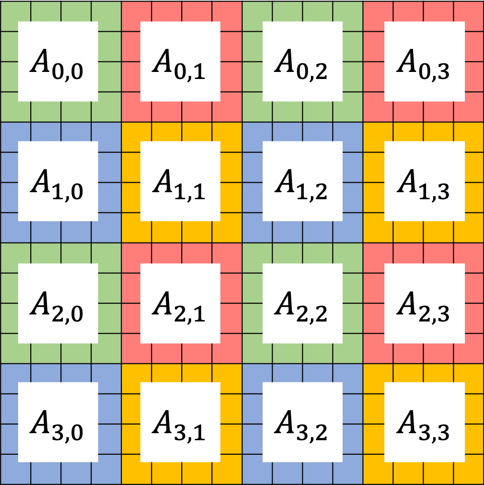

Versions of the library¶
The library comes in two main versions which are labelled ChASE-MPI and ChASE-Elemental. ChASE-MPI is the default version of the library and can be installed with the minimum amount of dependencies (BLAS, LAPACK, and MPI). ChASE-Elemental requires the additional installation of the Elemental library.
ChASE-MPI¶
Multi-Configurations¶
ChASE-MPI supports different configurations depending on the available hardware resources.
Shared memory build: This is the simplest configuration and should be exclusively selected when ChASE is used on only one computing node or on a single CPU. The simplicity of this configuration resides in the way the Matrix-Matrix kernel is implemented with respect to the full MPI build.
MPI+Threads build: On multi-core homogeneous CPU clusters ChASE is best used in its pure MPI build. In this configuration, ChASE is typically used with one MPI rank per computing node and as many threads as number of available cores per node.
GPU build: ChASE-MPI can be configured to take advantage of graphics card on heterogeneous computing clusters. Currently we support the use of one or more GPU cards per computing node in a number of flexible configurations: for instance on computing nodes with 4 cards per node one can choose to compile and execute the program with one, two or four GPU card per MPI rank.
Matrix Distributions¶
In ChASE-MPI, the MPI nodes are constructed as 2D grid, two data distributions are support to assigned sublocks of dense matrix A into different MPI nodes.
Block Distribution¶
The first is called Block Distribution, in which each MPI rank of 2D grid is assigned a block of dense matrix A. The most important kernel of ChASE is the Hermitian Matrix-Matrix Multiplication. This block data distribution results in a matrix-matrix multiplications on each node that is large and contiguous, often resulting in a performance close to the hardware theoretical peak. In addition, this data distribution allows an easy offloading of the multiplication to accelerators such as GPUs.
The figure above gives an example of ChASE which distributes a \(n \times n\) dense matrix \(A\) into a \(3 \times 3\) grid of MPI nodes. In this example, the matrix A is split into 2D, with a series of submatrices \(A_{i,j}\) in which \(i \in [0,2]\) and \(j \in [0,2]\). Therefore, \(A_{0,0}\) is distributed to MPI rank 1, \(A_{1,0}\) is distributed to rank 2, \(A_{2,0}\) is distributed to rank 3, \(A_{0,1}\) is distributed to rank 4, \(A_{1,1}\) is distributed to rank 5, and so on.
Block-Cyclic Distribution¶
The second is called 2D Block-Cyclic Distribution. This distribution scheme was introduced for the implementation of dense matrix computations on distributed-memory machines. Compared to the Block Distribution, the main advantage of the Block-Cyclic Distribution is improving the load balance of matrix computation if the amount of work differs for different entries of a matrix, e.g., QR and LU factorizations. A block distribution can lead to load imbalances.
Even the load balance is not a problem for ChASE, in which the most important kernel Hermitian Matrix-Matrix Multiplication is well balanced with the Block Distribution, we still provide the Block-Cyclic Distribution as an option in ChASE to avoid the re-distribution between these two types of distributions, which might be required for some application, e.g., solving generalized eigenproblem by ChASE with Cholesky factorization. In ChASE, its implementation with Block-Cyclic Distribution can achieve similar performance as the implementation with Block Distribution.
{kind=link}
The figure above show an example of ChASE which distributes a \(n \times n\) dense matrix \(A\) into a \(2 \times 2\) grid of MPI nodes in a block-cyclic scheme. Denoting the 4 MPI nodes as \(P_{0,0}\), \(P_{0,1}\), \(P_{1,0}\), and \(P_{1,1}\), they are marked as green, red, blue and yellow, respectively on the figure above. In this example, the matrix A is split into 2D, with a series of submatrices \(A_{i,j}\) in which \(i \in [0,3]\) and \(j \in [0,3]\). Each submatrix is assigned to one MPI node in a round-robin manner so that each MPI rank gets several non-adjacent blocks. For more details about Block-Cyclic Distribution, please refer to Netlib website.
ChASE-Elemental¶
ChASE-Elemental takes advantage of the Elemental library routines to execute its tasks in parallel. The data is distributed using Elemental distribution classes. ChASE-Elemental is available in a pure MPI build and, while it is slightly less performant than ChASE-MPI, it ensure a better scalability since, contrary to ChASE-MPI, the QR factorization is also executed in parallel. For stability reason, ChASE uses Elemental version 0.84.